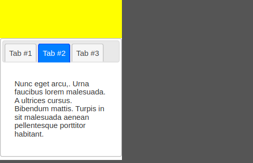

GUI-Recover trajectory

{
"event": "reset",
"goal": "Click on Tab #3.",
"screenshot": "0000.png",
"sha256": "e6a70ab30d43d0e3ca19c86e57ee09e7ba3ee61389be1d15145b61d0261048f0"
}{
"event": "candidate_prediction",
"prediction": {
"raw": "[0.28, 0.28]",
"point": [
0.28,
0.28
],
"input_query": "Tab #3",
"inference_seconds": 0.3731734622269869,
"hit": false
}
}
{
"event": "candidate_action",
"action": {
"action": "CLICK",
"value": null,
"position": [
0.28,
0.28
]
},
"reward": 0.0,
"terminated": false,
"truncated": false,
"task_info": {
"REWARD_GLOBAL": 0,
"RAW_REWARD_GLOBAL": 0,
"REWARD_REASON": null,
"DONE_GLOBAL": false,
"EPISODE_ID": 0,
"TASK_READY": true
},
"executed_code": "mouse_click(139.44000000000003, 89.88000000000001)",
"execution_error": "",
"screenshot": "0001.png",
"sha256": "e6a70ab30d43d0e3ca19c86e57ee09e7ba3ee61389be1d15145b61d0261048f0"
}{
"event": "episode_end",
"id": "click-tab-8001-normal_entry",
"task": "click-tab",
"seed": 8001,
"head": "balanced_20261119_target_last",
"conditional": false,
"success": false,
"reason": "task_not_completed",
"source_steps": 0,
"repair_steps": 1,
"resets_after_failure": 0,
"source_model_calls_reused": 0,
"candidate_model_calls_reused": 1,
"additional_submit_calls": 0,
"prefix_matched": true,
"total_logical_model_calls": 1,
"recovery_mode": null
}